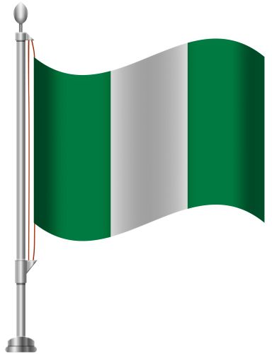

Magdalene Shehu
About Me
My name is Magdalene Shehu. I live in Nigeria and I enjoy learning web development. I am studying WDD 131 to improve my HTML, CSS, and JavaScript skills. I also enjoy cooking, running a small food business, and spending time with my family.
My Country

Nigeria is known as the Giant of Africa because of its large population and rich culture. It has many beautiful landscapes, diverse traditions, delicious foods, and friendly people. I am proud to call Nigeria my home.